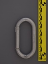

| Image | Summary | ||||
|---|---|---|---|---|---|
 | (Unknown) (D screwlock) | D | manual | gate stopped - thread runout | early style screwlocker from an unknown brand |
 | (Unknown) (Oval) (yellow tape) | oval | n/a | n/a | unknown carabiner c. 1950-1960s |
|  | (unknown) (MADE IN USA) | oval | n/a | n/a | unknown brand well finished oval |